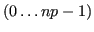
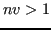
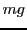
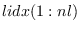
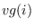
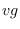

call psb_cdall(icontxt, desc_a, info,mg=mg,parts=parts) call psb_cdall(icontxt, desc_a, info,vg=vg,[mg=mg,flag=flag]) call psb_cdall(icontxt, desc_a, info,vl=vl,[nl=nl,globalcheck=.true.,lidx=lidx]) call psb_cdall(icontxt, desc_a, info,nl=nl) call psb_cdall(icontxt, desc_a, info,mg=mg,repl=.true.)
This subroutine initializes the communication descriptor associated
with an index space. One of the optional arguments
parts, vg, vl, nl or repl
must be specified, thereby choosing
the specific initialization strategy.
parts or
repl is specified, it is optional if vg is specified.
vl.
.true.
vl
.true.
Notes
parts, vg,
vl, nl or repl must be specified, thereby choosing the
initialization strategy as follows:
mg as well.
The subroutine must conform to the following interface:
interface
subroutine psb_parts(glob_index,mg,np,pv,nv)
integer, intent (in) :: glob_index,np,mg
integer, intent (out) :: nv, pv(*)
end subroutine psb_parts
end interface
The input arguments are:
pv;
vg(1:mg);
each index
is assigned to process .
The vector vg must be identical on all
calling processes; its entries may have the ranges 
or  according to the value of flag.
The size  may be specified via the optional argument mg;
the default is to use the entire vector vg, thus having
mg=size(vg).
vl(1:nl) assigned to the current process; thus, the global
problem size is given by
the range of the aggregate of the individual vectors vl specified
in the calling processes. The size may be specified via the optional
argument nl; the default is to use the entire vector
vl, thus having nl=size(vl).
If globalcheck=.true. the subroutine will check how many
times each entry in the global index space  is
specified in the input lists vl, thus allowing for the
presence of overlap in the input, and checking for ``orphan''
indices. If globalcheck=.false., the subroutine will not
check for overlap, and may be significantly faster, but the user
is implicitly guaranteeing that there are neither orphan nor
overlap indices.
lidx is available for
those cases in which the user has already established a
global-to-local mapping; if it is specified, each index in
vl(i) will be mapped to the corresponding local index
lidx(i). When specifying the argument lidx the user
would also likely employ lidx in calls to psb_cdins
and local in calls to psb_spins and psb_geins;
see also sec. 2.3.1.
vl)
the result is a generalized row-block distribution in which each
process  gets assigned a consecutive chunk of  global
indices.
vg or parts implies that
every process will scan the entire index space to figure out the
local indices.
parts and
vl invocations.
vl in
conjunction with globalcheck=.true., it will perform a scan
of the index space to search for overlap or orphan indices.
vl in
conjunction with globalcheck=.false., no index space scan
will take place. Thus it is the responsibility of the user to make
sure that the indices specified in vl have neither orphans nor
overlaps; if this assumption fails, results will be
unpredictable.
nl (alone), or vg.